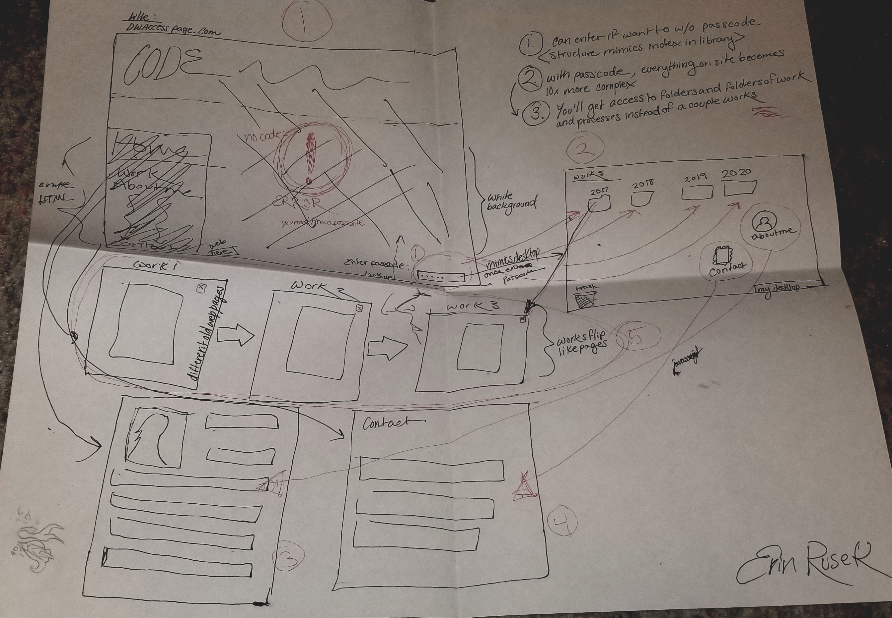
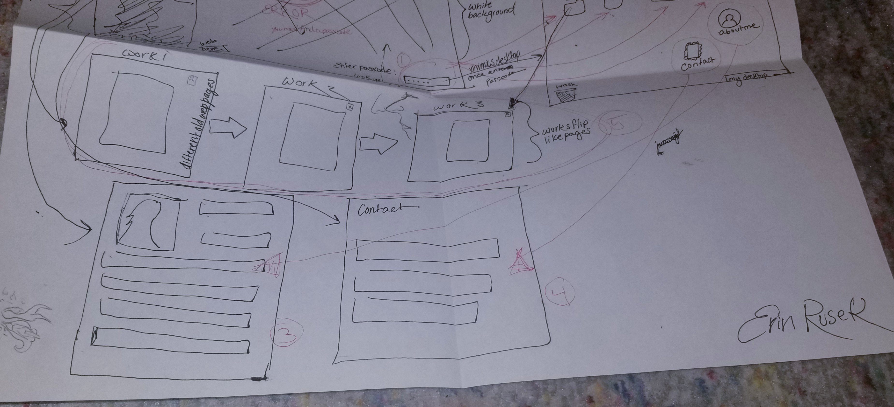
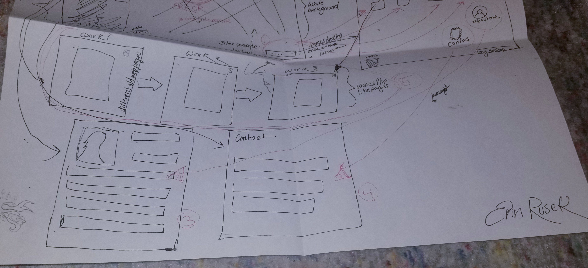
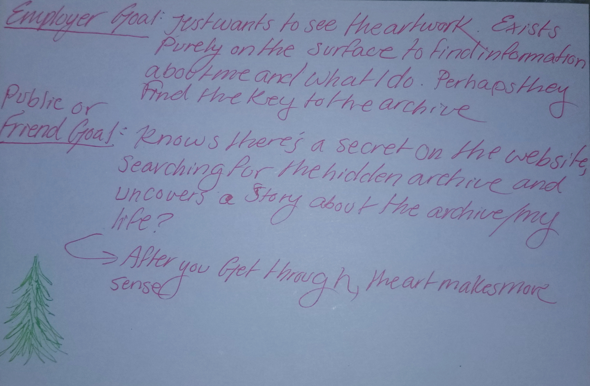
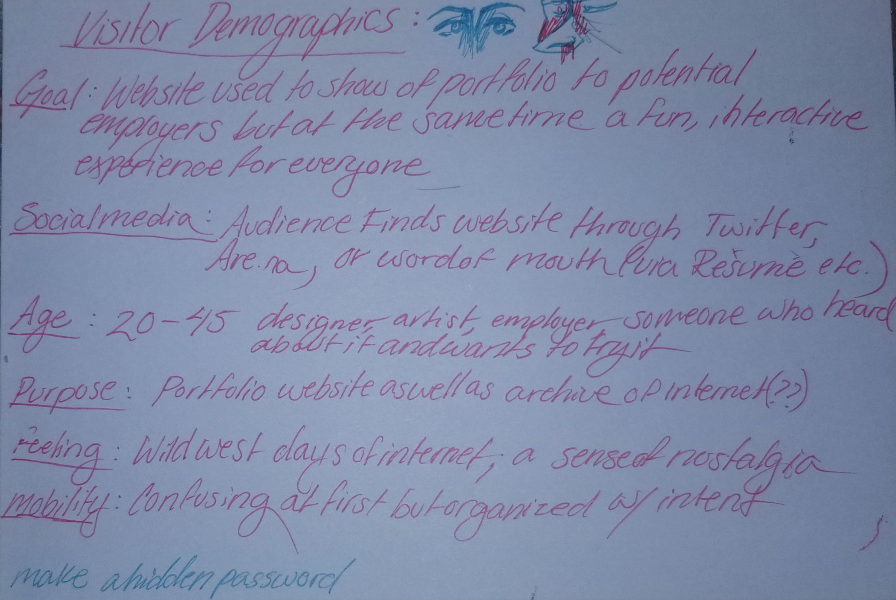
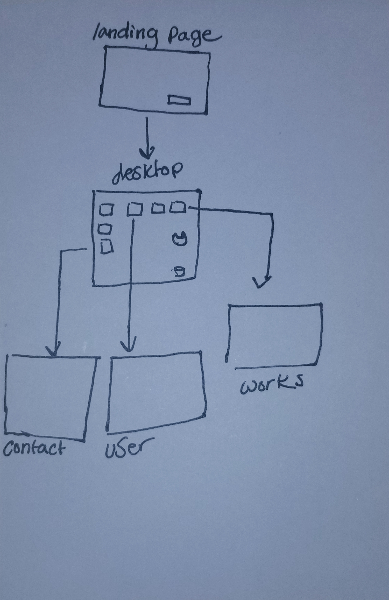

Homepage concept:
I would love to make my homepage as personal as possible... So I thought what would
be more personal than a desktop? My plan is to make a meta-computer (I will
explain). When landing on the site, the viewer will need to have a passcode to enter.
The passcode will be hidden onscreen (or I might make it open to anything to see
if people try to type a password in when they don't know it). Once inside, the
screen will display a personal desktop complete with folders, a trash bin and a
profile tab. I was also thinking I might integrate Google onto it somehow to make it
even more meta. Each folder will contain photographs and information on works
I've done, ordered by year. I am planning for this to be a portfolio site as well as
an experience, so I want to keep it interactive. The viewer can move folders,
throw things in the trashbin, or even lock themselves out of the website!
Concept/Planning Photographs:

 




Home